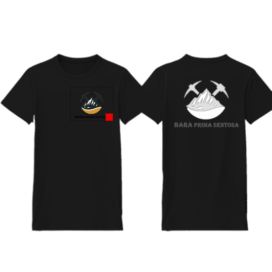

Custom Design Kaos
Kami menyediakan custom design yang sesuai dengan selera kamu.
Unggah desainmu, pilih produk, dan kami sablon dengan hasil premium. Cocok untuk kebutuhan personal, komunitas, hingga brand kamu.
Kami menyediakan custom design yang sesuai dengan selera kamu.
Kami akan selalu membantu kamu selama 24 jam.
Pesanan dikemas rapi dan dikirim ke alamat kamu.

Dari satuan hingga ribuan, kami bantu wujudkan desain kamu jadi nyata — cepat, rapi, dan tanpa ribet.
Semua produk bisa dicetak satuan maupun grosir dengan desain custom.
Dari personal sampai brand, semua bisa desain dan cetak di satu tempat.
Kaos kebersamaan untuk komunitas motor, hobi, hingga organisasi — satu desain, banyak ukuran.
Kaos panitia, angkatan, hingga merchandise acara.
Seragam kerja dan merchandise kantor yang rapi.
Jersey custom lengkap dengan nama dan nomor punggung.
Kaos couple, family gathering, atau kado spesial.
Mulai brand fashion-mu sendiri. Pesan satuan untuk sampel, lalu produksi grosir saat siap rilis.
Fitur yang bikin proses pesan kaos custom jadi lebih mudah.
Lihat desainmu langsung di produk sebelum dicetak.
Pilih dari galeri desain bila belum punya desain sendiri.
Kami cetak ulang jika terjadi kegagalan produksi.
Diskusikan desain langsung dengan tim kami.
Perkiraan biaya muncul selagi kamu mendesain.
Cetak di beberapa area: depan, belakang, hingga lengan.
Semua dilakukan online di halaman Custom Design, tanpa ribet.
Tentukan jenis produk dan modelnya: kaos, jaket, topi, atau jersey.
Pilih warna, upload desain sendiri, pakai galeri, atau minta dibuatkan.
Isi jumlah per ukuran (S–XXXL) dan tanggal pesanan dibutuhkan.
Isi data pemesan, cek ringkasan, lalu kirim pesanan kamu.
Bingung pilih bahan? Bandingkan karakter tiap bahan di bawah ini.
Ringan, lembut, dan adem — pilihan paling populer untuk kaos sablon.
Lebih tebal dan kokoh, jatuhnya bagus untuk kaos oversize.
Cepat kering dan menyerap keringat, nyaman untuk aktivitas.
Bagian dalam berbulu halus, hangat dipakai saat cuaca dingin.
Belum yakin? Tulis kebutuhanmu di catatan pesanan, tim kami bantu rekomendasikan bahan yang paling pas.
Dengan live preview, kamu bisa mencoba warna kaos dan mengatur posisi desain di bagian depan maupun belakang — jadi hasil akhir sesuai ekspektasi.

.png)
Klik salah satu ukuran untuk melihat ukurannya di gambar. Ukur kaos yang biasa kamu pakai, lalu bandingkan dengan tabel ini.
| Ukuran | Lebar (A) | Panjang (B) |
|---|---|---|
| S | 46 | 66 |
| M | 49 | 69 |
| L | 52 | 72 |
| XL | 55 | 74 |
| XXL | 58 | 76 |
| XXXL | 61 | 78 |
Satuan cm, toleransi ±1–2 cm.
Belum menemukan jawabannya? Tim kami siap membantu kamu memilih produk dan menyiapkan desain.
Bisa. Kami melayani sablon satuan maupun grosir untuk kebutuhan personal, komunitas, hingga brand.
File JPG dan PNG. Untuk hasil terbaik gunakan PNG dengan latar transparan dan resolusi tinggi.
Pilih opsi Galeri Desain untuk memakai desain contoh, atau Jasa Desain agar tim kami membuatkan desain sesuai brief kamu.
Kami memberikan jaminan cetak ulang jika terjadi kegagalan produksi.
Bisa, kami melayani pengiriman ke seluruh Indonesia.
Upload desainmu atau konsultasi langsung dengan tim kami!